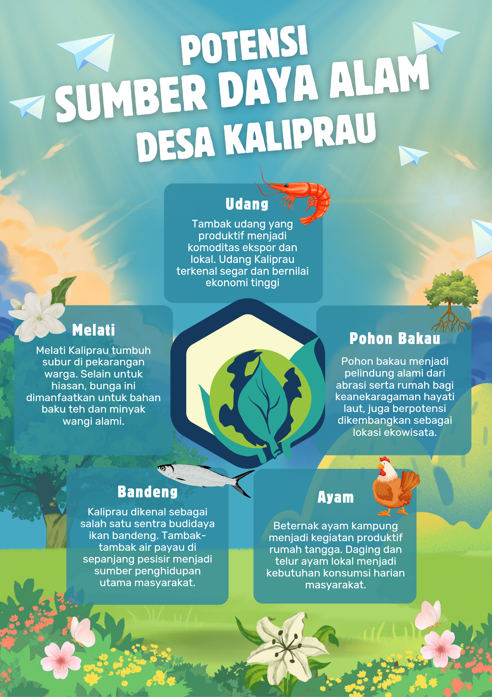

Alam & Kehidupan Kaliprau
Temukan beragam potensi sumber daya alam Desa Kaliprau

Desa Kaliprau memiliki kekayaan sumber daya alam yang melimpah dan menjadi penopang utama kehidupan masyarakat. Letaknya yang strategis di wilayah pesisir menjadikan desa ini memiliki potensi besar dalam sektor perikanan dan kelautan.
Sektor unggulan desa ini adalah budidaya ikan bandeng, udang, dan ayam yang telah lama menjadi mata pencaharian utama warga. Tambak-tambak dan peternakan tradisional maupun semi-intensif tersebar luas di wilayah desa dan terus dikembangkan melalui inovasi dan pelatihan masyarakat.
Di daratan, Kaliprau juga dikenal sebagai desa penghasil bunga melati. Komoditas ini tidak hanya memiliki nilai ekonomi tinggi, tetapi juga menjadi ciri khas budaya lokal. Sementara itu, ekosistem mangrove yang tumbuh subur di pesisir desa berperan penting dalam menjaga keseimbangan lingkungan serta menjadi habitat berbagai jenis biota laut.
Keberagaman sumber daya alam ini tidak hanya memberikan manfaat ekonomi, tetapi juga menjadi peluang besar untuk pengembangan desa yang berkelanjutan, ramah lingkungan, dan berbasis kearifan lokal.